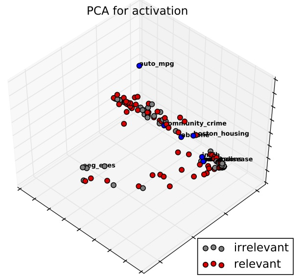

Our Deep Learning Research
We apply machine learning in all our research projects, most recently deep learning in particular due to its suitability for feature learning from large datasets and its ability to identify patterns in large and noisy datasets.
Most of our work on natural language processing and other time-series applications uses LSTM/GRU models (e.g. for sentiment analysis, natural language generation) while other projects in renewable energy and healthcare have used mainly CNNs.
Current projects include a PhD scholarship by Greenport Growth for deep learning for offshore wind energy in collaboration with Project Aura and 5 University PhD scholarships for work on or related to deep learning.
We run and host the annual Deep Learning Winter School (funded by the Ferens Education Trust) and offer a range of student projects in this area too.
Language Learning and Domain Transfer
Research beyond applications of deep learning to specific domains looks mainly into domain transfer of deep learning models. For example, we have developed a technique that allows natural language generation systems to produce outputs for completely new and unseen domains by drawing on a set of common abstract linguistic inputs identified from other domains and achieving up to 100% of source domain performance. This is useful as it reduces the need for large amounts of clean and high-quality data for each new domain, thereby reducing development time, costs and human effort and making a significant step towards automatic induction of language generation systems.
Fast Protoyping
We have also investigated shortcuts in developing deep learning models for new domains per se, including domain specific programming languages for fast prototyping based on an underspecific input representation that is automatically optimised for a new learning problem. Other research includes domain transfer for hyperparameter optimisation. Here, we found that development time for deep learning models can be reduced by up to 70% by reusing parameters that are known to be optimal in a domain that is similar to a current target domain across a number of objective characteristics.